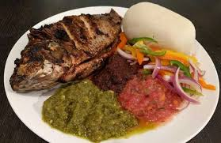
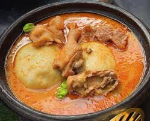
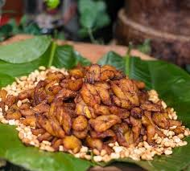
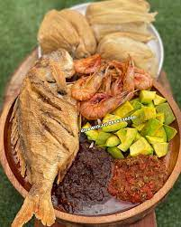
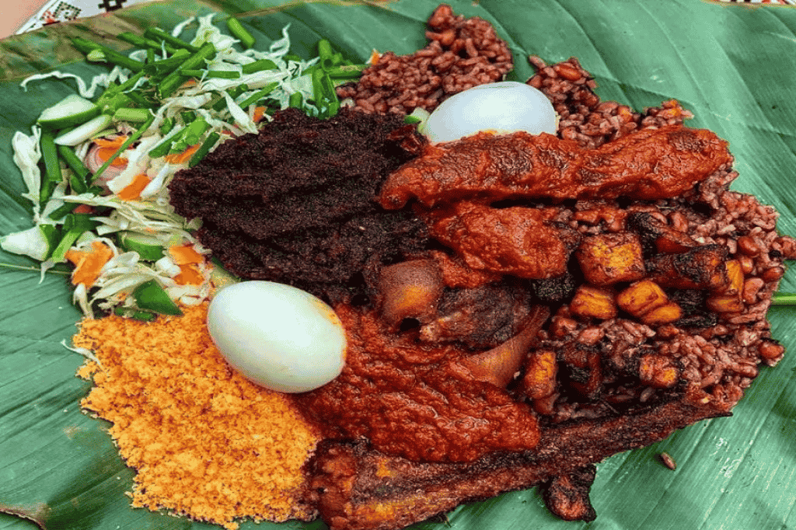

Jollof Rice
Spicy, tomato-based rice dish loved across West Africa. Often served with chicken, salad, and fried plantain.

Banku & Tilapia
Fermented corn dough paired with grilled tilapia and spicy pepper sauce. A true street food favorite!

Fufu & Soup
hBoiled cassava and plantain, pounded to perfection, served with palm nut or light soup and meat or fish.

Kelewele
Fried ripe plantains seasoned with ginger, pepper, and spices. Perfect late-night snack or side dish.

Kenkey & Fish
Fermented cornmeal dough served with fried fish, hot pepper sauce, and sliced onions. A Ga specialty!

Waakye
Cooked rice and beans served with stew, spaghetti, boiled eggs, and meat. A colorful lunchtime classic.